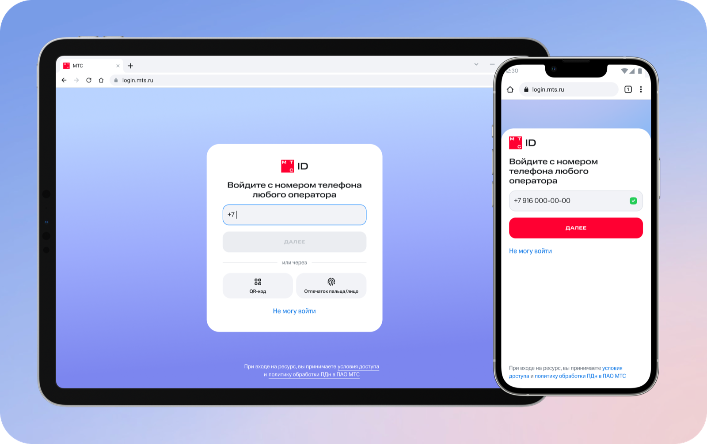

кейс ↗
Избранные работы / 2021—2026
Мой подход
Хороший интерфейс не требует инструкции. За этой простотой — вопросы, гипотезы и сотни решений, которые пользователю не придётся принимать.
Разбираюсь в задаче, людях и ограничениях. Иногда лучший экран — тот, который не понадобился.
Собираю сценарии, где следующий шаг очевиден, а сложная логика остаётся за кадром.
Сопровождаю разработку, проверяю состояния и довожу решение до живого продукта.
Приятно познакомиться
Я Татьяна, ведущий продуктовый дизайнер. Пять лет проектирую цифровые продукты в B2C, e-commerce и telecom — от первого входа до покупки и ежедневной работы.
Авторизация и профиль пользователя.
Lead Product Designer.
Интернет-магазин, CMS, OMS
и конструктор лендингов.